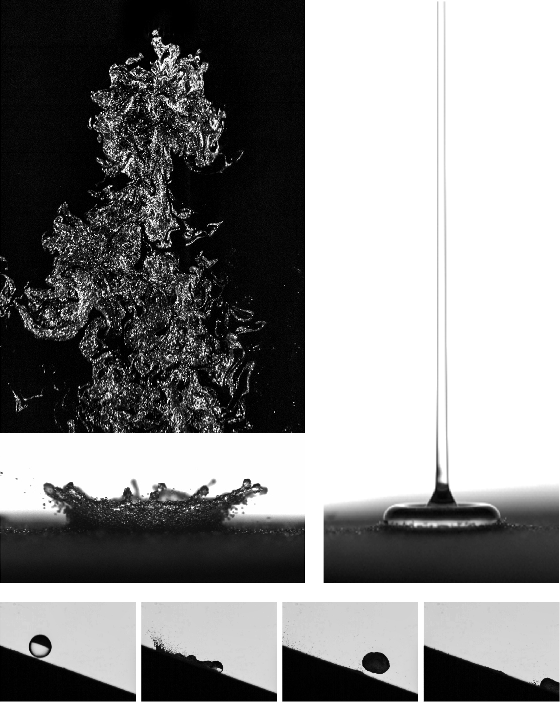

Jooyeon Park, Ph.D.
Jooyeon Park is a postdoctoral researcher in mechanical engineering at the University of Maryland, College Park, working with Prof. Alban Sauret since September 2025. She studies multiphase and particulate flows using controlled experiments, flow visualization, and physics-based modeling, with current work on droplet impact, granular media, and cohesive particle systems. Before joining UMD, she worked as a Staff Engineer at Samsung Electronics’ Semiconductor R&D Center from 2023 to 2025. She received her Ph.D. in Mechanical Engineering from Seoul National University in 2023, advised by Prof. Hyungmin Park, and her B.S. in Mechanical Engineering from Hanyang University ERICA in 2017, graduating Summa cum Laude.
She is broadly interested in complex flows, with a passion for experimental observation and physics-based modeling. Her research has explored particle-laden gas flows and other multiphase-flow problems, including drop–particle interactions, bubbly flows, airborne pathogen transmission, and heat transfer. She is now expanding her work toward cohesive and rheological particulate flows.
Outside the lab, she enjoys cycling and running. Her favorite activity is cooking with her family, which she believes is one of the most enjoyable ways to experience fluid mechanics in everyday life.


Research Preview
View all research →Featured Publication
All publications →J. Park, K.S. Lee and H. Park, “Optimized mechanism for fast removal of infectious pathogen-laden aerosols in the negative-pressure unit,” Journal of Hazardous Materials, 2022.
J. Park, H. Park, “Particle dispersion induced by vortical interactions in a particle-laden upward jet with a partial crossflow,” Journal of Fluid Mechanics, 2021.
Latest News
All news →April 2026
Our manuscript, “Axial Forces in Capillary Liquid Bridges of Polymer Solutions,” has been submitted.